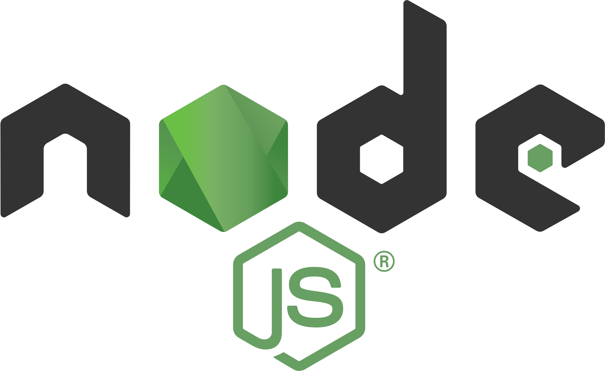
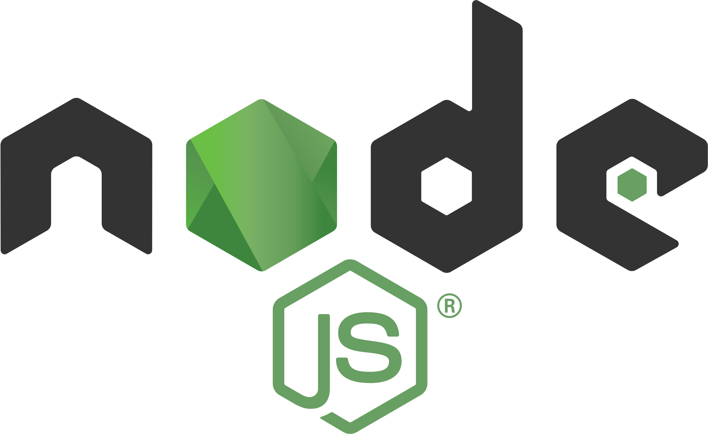

BAC
2018 - 2021
NSI - Maths - SI
Lycée Pierre Bayle, Sedan
A la recherche d'opportunités pour m'épanouir dans ce domaine.

2018 - 2021
NSI - Maths - SI
Lycée Pierre Bayle, Sedan
2021 - 2023
Option SLAM
Lycée Gaspard Monge, Charleville-Mézières
2023 - 2024
EiSINe, Charleville-Mézières
Les compétences que j'ai acquises au cours de mes études et expériences professionnelles :
Projets UWP, WPF

HTML/CSS, JS, PHP


SQL, MariaDB

Développements sur AX
NextJS, React Native

 

Introduction avec Python
Git pour les projets
Création de rapports
Mon immersion dans le monde professionnel.
Développeur
03/2024 - 06/2024 (12 semaines)
Stage (3ème année)
Carignan
Développeur
01/2023 - 02/2023 (5 semaines)
Stage (2ème année)
Carignan
Informaticien
05/2022 - 06/2022 (5 semaines)
Stage (1ère année)
Vivier-au-Court